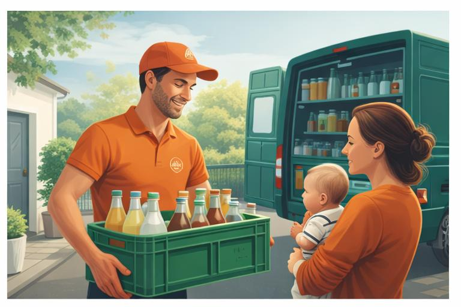
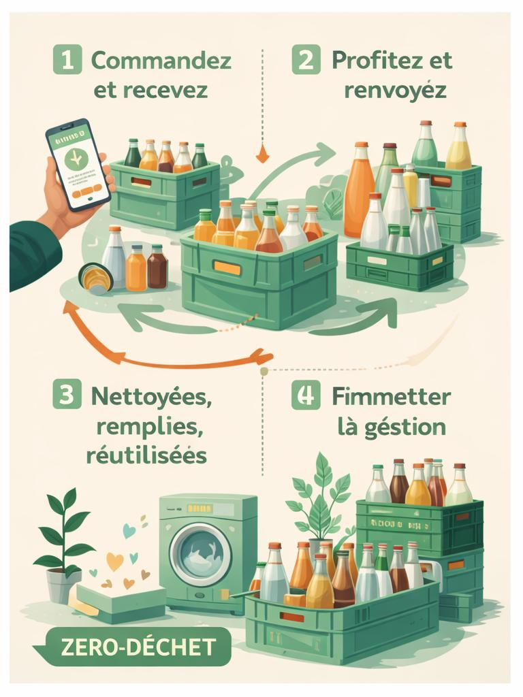
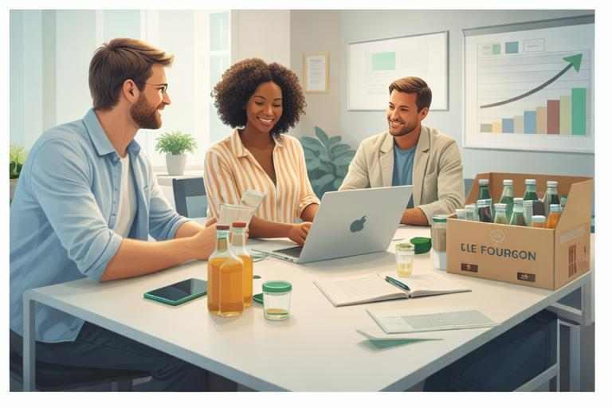

Bouteilles évitées
Visualiser l’impact en temps réel pour renforcer l’engagement et la compréhension du service.
Une expérience plus fluide, plus claire et plus performante pour commander des boissons consignées, suivre son impact écologique et simplifier la transition vers des usages plus durables.


Le prototype met en avant l’impact écologique pour rendre la proposition de valeur plus concrète dès l’arrivée sur le site.Visualiser l’impact en temps réel pour renforcer l’engagement et la compréhension du service.
Réduire les frictions de commande avec une navigation mobile-first et des CTA visibles.
Valoriser les résultats via des indicateurs clairs, utiles aussi bien au BtoC qu’au BtoB.
Le parcours est pensé pour rester simple, pédagogique et rapide à comprendre.
Choix des produits, parcours raccourci, visibilité immédiate des informations essentielles.
Expérience claire et rassurante, adaptée aux usages du quotidien sur mobile et desktop.
Le retour des contenants est intégré au parcours pour rendre la consigne naturelle et fluide.
Cette section répond aux attentes spécifiques de la cible BtoB : clarté, preuves d’impact, autonomie et demande de devis simplifiée.

Présenter une offre claire, montrer la valeur RSE, rassurer par la preuve sociale et faciliter la prise de contact.
Formulaire de devis, témoignages clients, simulateur d’impact et espace client dédié.
La preuve sociale aide à crédibiliser l’offre et à soutenir la conversion.
“Le service est très simple à mettre en place et l’impact est visible rapidement.”
Responsable RSE – Entreprise cliente
“Le parcours est plus clair et les bénéfices écologiques sont mieux expliqués.”
Utilisatrice BtoC – Test bêta
“L’entrée BtoB dédiée facilite vraiment la compréhension de l’offre entreprise.”
Office manager – Test utilisateur
La structure est pensée pour un usage mobile prioritaire, avec lecture rapide, blocs verticaux et actions visibles.
Cette première version peut ensuite évoluer vers un site plus dynamique avec plusieurs pages, base de données et CMS headless.